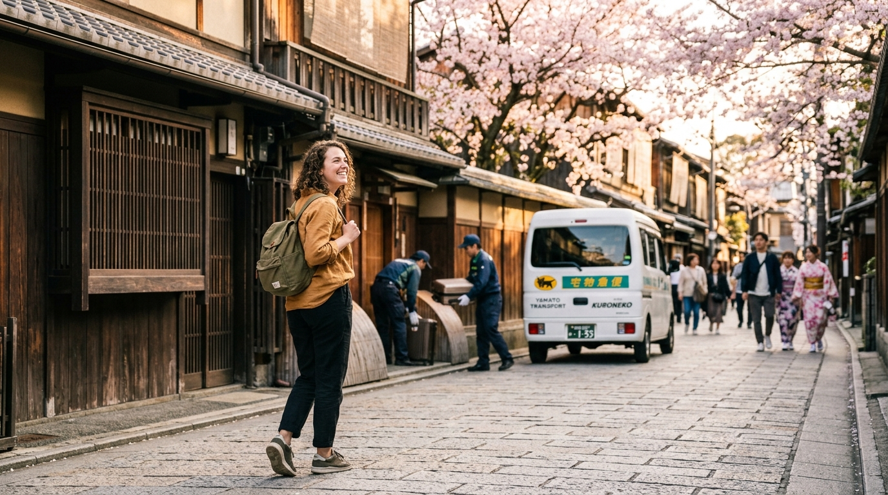
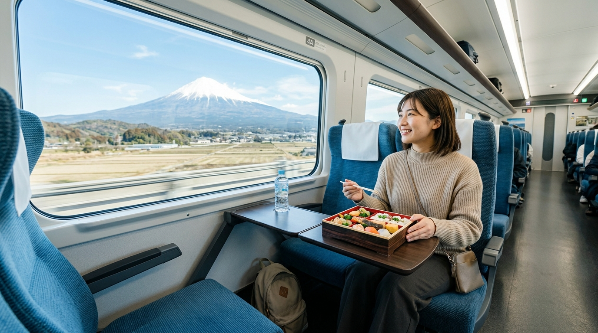

1
1. Đặt dịch vụ trực tuyến
Chọn sân bay (Haneda, Narita, Kansai), khách sạn hoặc ga tàu Shinkansen. Đặt chỗ chỉ trong 2 phút với giá cước niêm yết rõ ràng, không lo bất đồng ngôn ngữ.
Du lịch thảnh thơi chỉ từ ¥2,090 (~350.000đ). Chúng tôi giao nhận hành lý tận nơi giữa Tokyo, Kyoto, Osaka, các Ryokan onsen truyền thống và sân bay Haneda, Narita & Kansai.

Gửi hành lý đi trước tại Nhật Bản không còn rào cản ngôn ngữ. Quy trình số hóa 100% không cần điền phiếu giấy phức tạp.
Chọn sân bay (Haneda, Narita, Kansai), khách sạn hoặc ga tàu Shinkansen. Đặt chỗ chỉ trong 2 phút với giá cước niêm yết rõ ràng, không lo bất đồng ngôn ngữ.
Xuất trình mã đặt chỗ trên điện thoại tại sảnh lễ tân khách sạn hoặc quầy Yamato đối tác. Nhân viên quét mã xác thực và gắn thẻ niêm phong điện tử an toàn.
Lên tàu siêu tốc Shinkansen rảnh tay, nhâm nhi cơm hộp Ekiben ngắm núi Phú Sĩ hoặc vi vu tham quan đền chùa. Hành lý sẽ đợi sẵn trong phòng khách sạn kế tiếp!
Chọn phong cách du lịch của bạn để xem việc gửi hành lý trước mang lại sự tự do ra sao:
Bạn sở hữu vé tàu JR Pass và muốn khám phá từ Tokyo đến Kyoto, Osaka và Hiroshima. Bưng bê vali cồng kềnh qua các cầu thang ga đông đúc và nhét vali vào khoang tàu hẹp là nỗi ám ảnh. Gửi vali từ khách sạn Tokyo đến thẳng khách sạn Osaka, bạn chỉ cần mang balo nhỏ ngắm núi Phú Sĩ và thưởng thức cơm hộp Ekiben trên tàu Shinkansen!

Các hành lang du lịch được du khách quốc tế và người Việt ưa chuộng nhất
Hơn 12.000+ du khách đã trải nghiệm hành trình du lịch Nhật Bản nhẹ tênh
"Dịch vụ tuyệt vời cho gia đình mình khi đi từ Tokyo sang Kyoto! Gửi 3 kiện vali lớn tại sảnh khách sạn Tokyo lúc 9h sáng, đi tàu Shinkansen chỉ cần mang balo nhỏ. Đến chiều nhận phòng tại Kyoto thì vali đã được nhân viên đưa sẵn vào phòng."
"Đáp chuyến bay sáng tại sân bay Haneda, mình gửi vali ngay tại quầy và đi thẳng tới đền Asakusa chụp ảnh kimono cả ngày. Không phải kéo lê bánh xe vali trên đường phố Nhật gồ ghề. Rất đáng đồng tiền!"
"Đặt qua VALIGO nhanh hơn nhiều so với điền phiếu giấy tiếng Nhật của Yamato thông thường. Giao diện có tiếng Việt, hiển thị giá rõ ràng theo cả Yên và VNĐ, có mã tracking và tem niêm phong an tâm tuyệt đối."
Những điều cần biết khi gửi hành lý liên tỉnh và sân bay tại Nhật Bản.